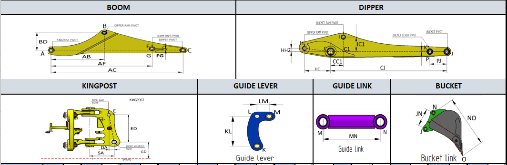

Projects / P.05 · Case study
Backhoe Loader Kinematics & Force Analysis
Linkage geometry in, every pin-joint force and the whole performance envelope out — replacing free-body work that was being redrawn by hand for each configuration.
- Context
- R&D internship — Escorts Kubota Limited, Agricultural & Construction Machinery — Faridabad, India, Dec 2021 – Jun 2022
- Tools
- Excel · VBA · Siemens Solid Edge
- Result
- About 30% less time per linkage analysis — and cheap enough that a geometry variant was worth trying
Geometry in

Forces and envelope out


What I'd do differently
- Validate against a measured breakout force. The solution is internally consistent and never checked against a real machine. One test would either confirm it or expose whichever term the free-body treatment simplified.
- Not a spreadsheet. Excel got it adopted — it ran on every machine in the office. It also has no tests, no version control, and any formula can be overwritten silently.
- Sweep, don't spot-check. Having made variants cheap, it still evaluates one at a time. A loop over the geometry parameters would turn a calculator into a design-space explorer.